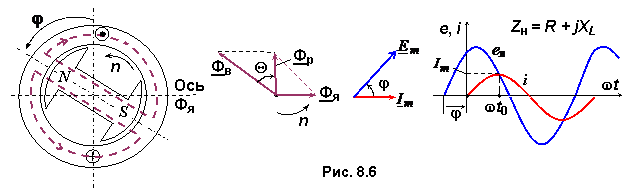

8.2.2.4. Реакция якоря при активно-индуктивной нагрузке.
Выводы, полученные на основании трёх случаев, можно распространить и на общий случай смешанной нагрузки. Так, при активно-индуктивной нагрузке (рис. 8,6) реакция якоря имеет две составляющие – продольную (создающую момент
сопротивления на валу ротора) и поперечную (размагничивающую машину).
